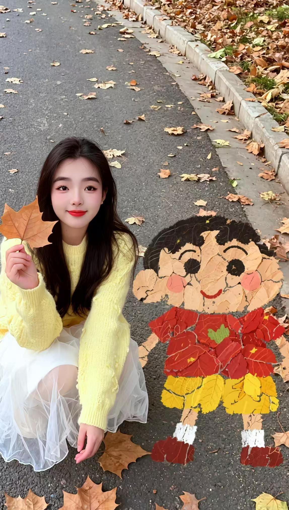

🍂 秋天的叶子女孩
🍂 The Girl of Autumn Leaves

每当我看到这张照片，我的心就回到了那个秋天。金黄的叶子铺满了地面，你穿着黄色的毛衣坐在中间，手里拿着一片大大的叶子，脸上带着微笑。在你身边，还有一个用叶子做成的小伙伴，好像童话里的故事突然活了过来。
李琪，你知道吗？你的纯真就藏在这些小小的快乐里。一片叶子、一个微笑、一个安静的瞬间——这些就足够让你开心了。在这个什么都讲求名利的世界里，你还保持着一颗孩子般的心，这就是你最珍贵的地方。
我常常想，爱情到底是什么？是钻石吗？是豪宅吗？都不是。爱情就是看着你因为一片叶子而开心，而我因为你的开心而开心。就是这么简单，也这么深。
有时候我会害怕。害怕这么纯真的你，在这个复杂的世界里受到伤害。害怕你的心碎，害怕你的眼泪。所以我想告诉你：无论你在哪里，我都会在你身边。在你的叶子世界里，在你的微笑里，在你的沉默里，我都在。
我想陪你走过每一个季节。春天看花开，夏天听蝉鸣，秋天踩落叶，冬天看雪花。而秋天，我最想和你一起度过，因为秋天有你，有金黄的叶子，有我们最美的回忆。
李琪，你是我的秋天，是我的温暖，是我的家。别人追逐整个世界的时候，我只想追逐你的笑容。因为你的笑容一出现，秋天也变成了春天。
请你相信我：我会守护你的纯真，守护你的快乐，守护你心里那个小小的叶子世界。一天也好，一辈子也好，我都会陪着你，牵着你的手，慢慢走过人生的每一条路。
我的爱人，你是我的，你是我一个人的秋天。无论未来多远，我对你的爱只会越来越深，像秋天的叶子一样，一层一层，铺满我的整颗心。
🍂❤️ 我爱你，李琪，永远爱你。❤️🍂
Whenever I look at this photo, my heart goes back to that autumn. Golden leaves covered the ground, and there you sat in the middle of them, in your yellow sweater, holding a big leaf in your hand, smiling. Beside you was a little friend made of leaves, as if a story from childhood had suddenly come alive.
Li Qi, do you know? Your innocence lives in these small joys. One leaf, one smile, one quiet moment — that is enough to make you happy. In a world that chases fame and fortune, you still keep a child's heart, and that is the most precious thing about you.
I often wonder, what is love? Is it diamonds? Is it a mansion? No. Love is watching you be happy over a single leaf, and being happy myself because you are happy. That simple — and that deep.
Sometimes I feel afraid. Afraid that someone as innocent as you might get hurt in this complicated world. Afraid your heart might break, afraid of your tears. So I want to tell you: wherever you are, I will be with you. In your world of leaves, in your smile, in your silence — I am there.
I want to walk with you through every season. Spring flowers, summer songs, autumn leaves under our feet, winter snow. And autumn most of all, because autumn has you, golden leaves, and our most beautiful memories.
Li Qi, you are my autumn, my warmth, my home. While others chase the whole world, I only want to chase your smile. Because the moment your smile appears, autumn itself turns into spring.
Believe me: I will protect your innocence, protect your happiness, protect that little leaf world inside your heart. For a day, or for a lifetime, I will stay beside you, holding your hand, walking slowly down every road of life.
My beloved, you are mine, you are my one and only autumn. No matter how far the future goes, my love for you will only grow deeper — like autumn leaves, layer upon layer, covering my whole heart.
🍂❤️ I love you, Li Qi, forever. ❤️🍂